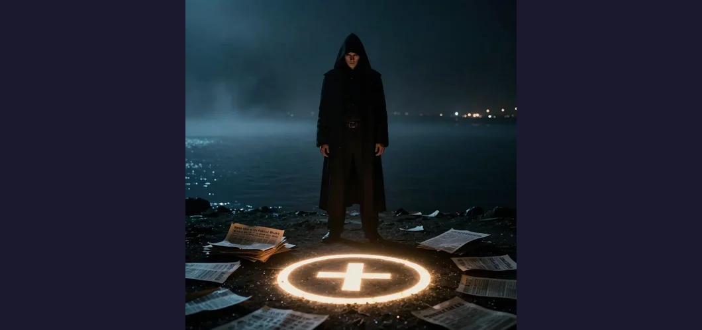

Zodiac Killer: The Unsolved Murders That Terrified California

It was the summer of 1969. Hundreds of thousands of young people were gathering on a farm in New York for the Woodstock music festival. Apollo 11 astronauts were walking on the Moon. But in the hills and valleys of Northern California, a very different story was taking place.
A killer was stalking young couples who parked on lonely roads and quiet lakeshores around San Francisco Bay. He did not want only to harm people. He wanted to be known. Between December 1968 and October 1969, he killed at least five people and badly hurt two others.
He sent letters to big newspapers. They held cryptograms, which are messages written in secret code. They held taunts, and they held details of the crimes that only the killer could know. He wore a strange hooded costume with a crossed-circle symbol. He phoned the police from payphones to report his own crimes. He claimed 37 victims. Police confirmed five killings and two attacks on people who survived.
He called himself the Zodiac. More than half a century later, after a huge investigation, nobody has been charged with his crimes. The Zodiac is still one of the most famous unsolved serial murder cases in the United States. A serial killer is someone who kills several people over time.
Northern California in the late 1960s was a place of sharp contrasts. There was the hippie scene of Haight-Ashbury and anti-war protests at UC Berkeley. There was the early technology boom of Silicon Valley. There were also quiet, working-class towns in the North Bay and in Vallejo.
It had wide-open spaces, winding country roads, and lonely lakeshores. This gave the Zodiac the privacy he needed to stalk, attack, and vanish. Many police groups shared the area. They were the San Francisco Police Department, the Vallejo Police Department, the Napa County Sheriff’s Office, the Solano County Sheriff’s Office, and the FBI. This made the hunt harder.
The first confirmed attack came on December 20, 1968. It happened on Lake Herman Road, a lonely road near Vallejo, California. Some sources place it in nearby Benicia. David Faraday, age 17, and his girlfriend Betty Lou Jensen, age 16, were high school students. They had driven to a quiet gravel turnout to talk.
Another car pulled up beside theirs. A man got out with a gun and fired. Both teenagers died.
Seven months later, on July 4, 1969, Michael Mageau, age 19, and Darlene Ferrin, age 22, were sitting in Ferrin’s car at Blue Rock Springs Park in Vallejo. A man drove up and shone a flashlight in their eyes. Then he fired a 9mm pistol. Ferrin died.
Mageau was badly hurt but survived. He described the attacker as a heavyset white man, about 5’8″ tall. Soon after, at about 12:40 AM on July 5, a man called the Vallejo Police Department from a payphone. He claimed both the Blue Rock Springs attack and the Lake Herman Road murders. It was the Zodiac’s first direct contact with the police.
The third confirmed attack came on September 27, 1969. It happened at Lake Berryessa, a large reservoir in Napa County. Bryan Hartnell, age 20, and his girlfriend Cecelia Shepard, age 22, were having a picnic on a quiet shore.
A man walked up in a strange hooded costume, like an executioner’s. He wore a black hood with a crossed-circle symbol on the chest. He tied up the two young people and attacked them with a knife. Afterward, he used a marker to write on the door of their car. He drew his crossed-circle symbol, wrote the dates of the earlier attacks, and added the words “by knife.”
Shepard died of her injuries two days later. Hartnell survived. The Lake Berryessa attack was the most theatrical of the Zodiac’s crimes. It was almost a performance. Some think it shows a killer who wanted fame as much as he wanted to do harm.
The Zodiac sent at least four cryptograms to newspapers between 1969 and 1970. The first was known as Z 408. It had 408 symbols and was sent in three parts. They went to the Vallejo Times-Herald, the San Francisco Examiner, and the San Francisco Chronicle in late July and early August 1969.
A teacher from Salinas, California, Donald Harden, and his wife Bettye cracked it within days. They were not codebreakers by trade. The message said that he liked killing people because it was fun to him. It also said that his victims would be his slaves in the afterlife.
The second and most famous cipher was Z 340. It had 340 symbols and was mailed to the San Francisco Chronicle on November 8, 1969. For 51 years it stayed unsolved. It was one of the longest-lasting code puzzles in history.
A team of David Oranchak, Sam Blake, and Jarl Van Eycke finally cracked it in December 2020. The message began: “I hope you are having lots of fun in trying to catch me.” But it held nothing that named the killer. Other ciphers are still unsolved. One is Z 13, a short cipher that some people read as “My name is___.”
The fourth and last confirmed attack came on October 11, 1969. It happened in Presidio Heights, a wealthy neighborhood of San Francisco. Paul Stine, a taxi driver, was shot in his cab at about 9:55 PM, at Washington and Cherry Streets. He died.
The killer had torn a piece from the victim’s shirt. The piece was later mailed to the San Francisco Chronicle as proof that he was the killer.
Witnesses saw a man near the cab and described a white man.
But a serious mistake slowed the hunt right away. A police radio call wrongly described the suspect as a Black man. Officers passed over a white man who fit the real description.
SFPD Inspector Dave Toschi would become the best-known detective on the case. A huge manhunt began. But the Zodiac was gone.
Two days later, a letter reached the San Francisco Chronicle. It held a piece of Paul Stine’s shirt. It also threatened to attack children on a school bus and to “pick off” people in the streets. The letter was signed with the crossed-circle symbol. The killer had first used the name “the Zodiac” in a letter in August.
Between July 1969 and 1974, the Zodiac sent many letters. Counts differ, from about 15 to 22 that experts accept as real. They went to newspapers and the police. They often carried the crossed-circle symbol. They held cryptograms, crime details, threats, and taunts for the police.
“I am crackproof,” he wrote in one letter. In another: “I am not afraid of the gas chamber because it will send me to paradise.” He threatened to blow up school buses and to shoot people on the street. He also threatened to torment his victims’ souls in the afterlife.
The letters turned the Zodiac from a killer into a kind of terrorist of the mind. He used fear as a weapon. The last letters came in 1974. After that, they stopped.
In the decades since, police have looked at dozens of suspects. The most famous is Arthur Leigh Allen, who lived from 1933 to 1992. He was a former elementary school teacher who had been convicted of an unrelated crime. Several police groups investigated him closely.
Allen denied being the Zodiac. Detective Dave Toschi later said the evidence against him “turned out to be negative.”
But DNA taken from the stamps on Zodiac letters in 2002 did not match Allen. DNA is the code in every living cell that is different for each person. He died in 1992, before he could be charged. The mix of clues and lack of proof makes him the most debated suspect.
Police looked at about 2,500 suspects, and only about six were seen as credible. Other names have been raised, such as Richard Gaikowski and Lawrence Kane. In March 1970, a woman named Kathleen Johns said a man took her and her baby near Patterson. The Zodiac later mentioned this in a letter.
In 2021, a volunteer cold-case group called “Case Breakers” named a man, Gary Francis Poste, as the Zodiac. Police said the claim does not hold up.
Robert Graysmith was a cartoonist at the San Francisco Chronicle. He grew obsessed with the case. He wrote two key books, Zodiac (1986) and Zodiac Unmasked (2002). In the end he pointed to Allen. But many experts doubt his conclusion.
The Zodiac has left a huge mark on culture. The case inspired the 1971 film Dirty Harry. In it, Clint Eastwood plays Inspector “Dirty” Harry Callahan, who hunts a killer called “Scorpio,” who was inspired by the Zodiac. The 2007 film Zodiac was directed by David Fincher. It starred Jake Gyllenhaal, Robert Downey Jr., and Mark Ruffalo. The film is based on Robert Graysmith’s books and points toward Allen.
The Zodiac has also shaped many other stories. He has become the model of the “clever killer who taunts the police.”
People have often tried to use modern science on the evidence from the late 1960s. In 2002, experts tested saliva found on the stamps and envelopes of Zodiac letters. They found a partial DNA profile. It did not match the main suspect, Arthur Leigh Allen. But some question how reliable this DNA is. It may have come from someone else who touched the stamp.
In 2020, the cracking of the Z 340 cipher showed that modern computer methods can still give new clues. Some investigators think forensic genealogy might help. This is a method that helped catch the Golden State Killer in 2018. It uses family-tree databases to find relatives of an unknown person. Vallejo police tried it on the Zodiac case in 2018. The case is still listed as open by the FBI, the Vallejo Police Department, and other agencies.
At its heart, the Zodiac case is a story about what is missing. There is no name, no face that is certain, no conviction, and no answer. The killer built his identity from letters, symbols, codes, taunts, threats, and a piece of a dead man’s shirt. His made-up persona has lasted for more than half a century.
The confirmed attacks lasted only ten months. But the Zodiac’s shadow has stretched across decades. It has inspired films, books, documentaries, websites, and a crowd of amateur investigators. They keep studying the evidence, the ciphers, and the theories.
The Z 13 cipher, “My name is___,” is still unsolved. The DNA is still partial. The suspects are still based on clues, not proof. The case is still open. And the question the Zodiac asked the world in his own secret code is still unanswered. Who am I?
References & Further Reading
📚 Recommended Reading: Zodiac (on Amazon) — As an Amazon Associate, we earn from qualifying purchases.
Editorial note: Five murders and two attacks on survivors are linked to the Zodiac, and the killer was never named. The letters and ciphers are real, but every suspect, including Arthur Leigh Allen, is still based on clues and not on proof. See our Editorial Policy.